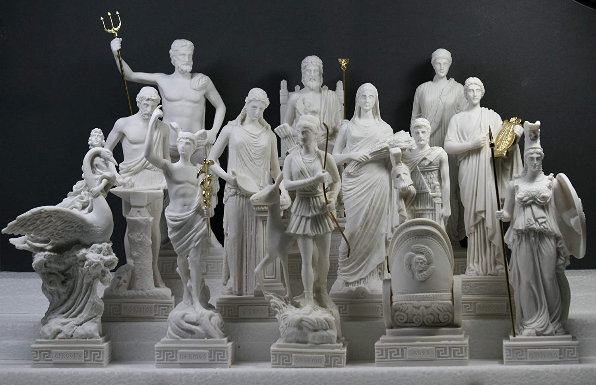
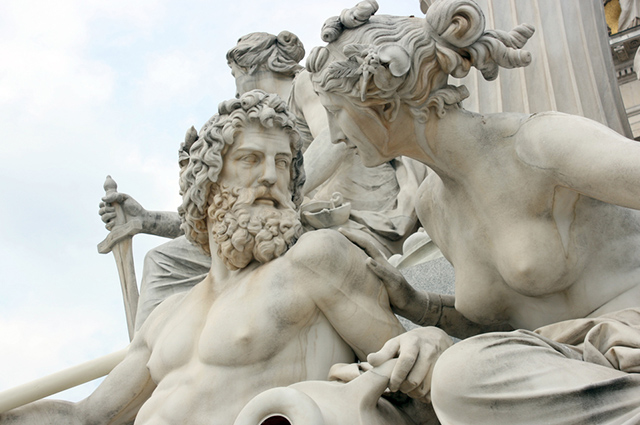
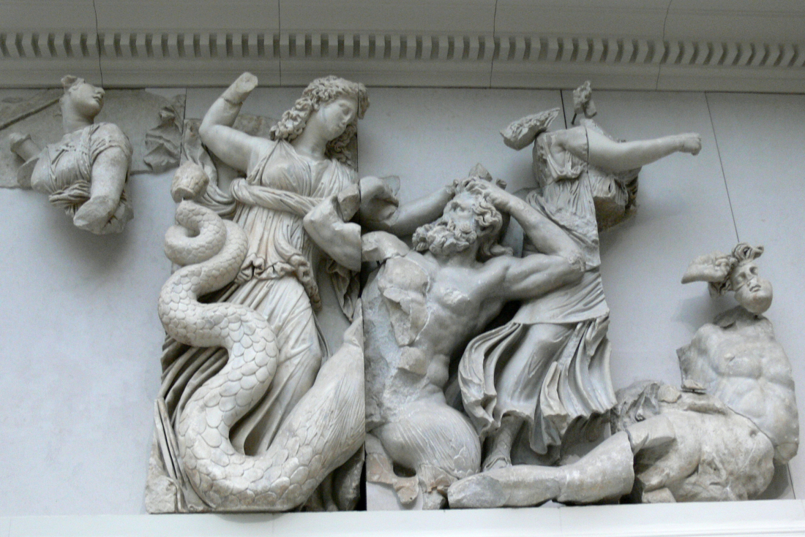
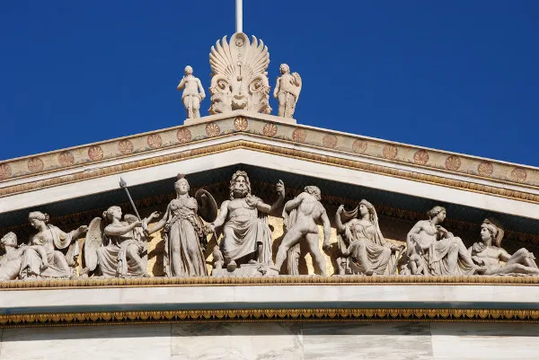

A GÊNESE DO COSMOS
LINHA DO TEMPO

No princípio, o universo era Caos: uma mistura indistinguível de elementos e o vazio absoluto. De sua vastidão silenciosa, surgiram as fundações da realidade. Gaia personificou a Terra firme, enquanto o Tártaro formou as profundezas do abismo. Juntos a Eros (Amor), Nix (Noite) e Érebo (Escuridão), eles deram início à teia da existência, transformando o vazio em um cenário pronto para o drama dos deuses.

Sem a necessidade de união, Gaia gerou Urano, o Céu Estrelado, para ser seu igual e cobri-la por todos os lados. De seu abraço eterno, nasceram os doze Titãs, divindades de força descomunal. Contudo, a linhagem também trouxe os Ciclopes (gigantes de um só olho) e os Hecatônquiros (seres de cem braços e cinquenta cabeças), cujas formas monstruosas horrorizaram Urano, desencadeando o primeiro conflito familiar do cosmos.
Repudiando seus filhos deformados, Urano os aprisionou no útero de Gaia, as profundezas da Terra, causando-lhe dores insuportáveis. Em busca de vingança, Gaia forjou uma foice de diamante e convocou seus filhos Titãs. Apenas o jovem Cronos teve coragem de agir: ele castrou o próprio pai, separando definitivamente o Céu da Terra. Do sangue que caiu sobre o mar, a espuma gerou Afrodite, a deusa da beleza e do amor.

Temendo uma profecia de que seria destronado por um filho, Cronos passou a devorar seus herdeiros assim que nasciam. Mas a estratégia falhou quando Reia enganou o marido, dando-lhe uma pedra no lugar de Zeus. Ao crescer, Zeus libertou seus irmãos e iniciou a Titanomaquia, uma guerra cataclísmica de dez anos. Com os raios forjados pelos Ciclopes, os Deuses Olímpicos finalmente derrotaram os Titãs, selando-os para sempre no Tártaro.

Com a vitória, a ordem substituiu a brutalidade titânica. Zeus, Poseidon e Hades lançaram sortes para dividir o domínio do mundo: Zeus ficou com o Céu, Poseidon com os Oceanos e Hades com o Submundo. Estabelecidos nos picos nevados do Monte Olimpo, os doze deuses principais passaram a governar as leis da natureza e o destino dos homens, marcando o início da era de ouro da mitologia grega.